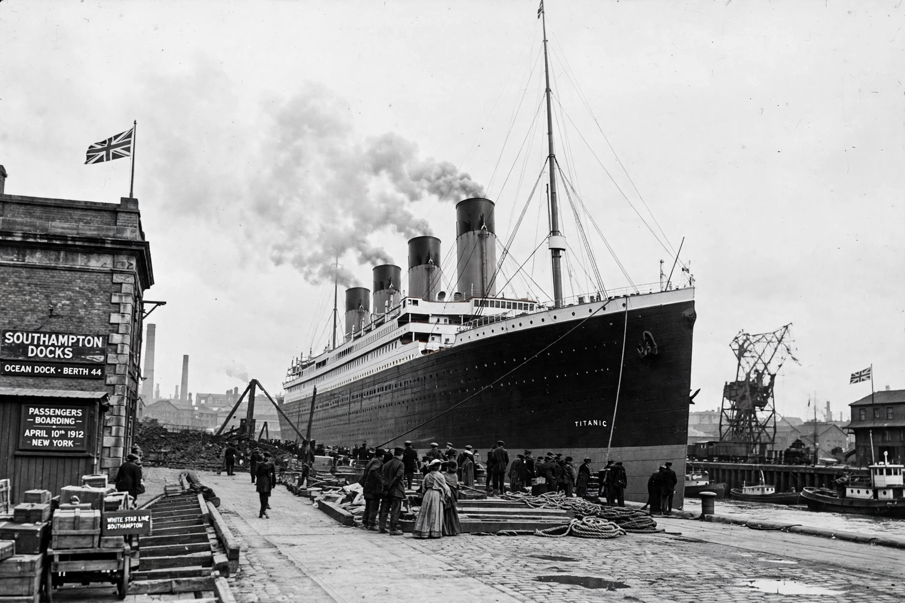

RMS Titanic
From Wikipedia, the free encyclopedia

Titanic departing Southampton, 1912.RMS Titanic was a British Olympic-class ocean liner operated by the White Star Line that sank in the North Atlantic Ocean on 15 April 1912 after striking an iceberg during her maiden voyage from Southampton to New York City. Of the roughly 2,224 people aboard, more than 1,500 died, making it one of the deadliest peacetime maritime disasters. The wreck, rediscovered in 1985 some 3,800 metres down, has made Titanic the most famous ship in history.
Background and construction
Titanic and her sisters Olympic and Britannic were built by Harland & Wolff in Belfast to compete with Cunard\'s Lusitania and Mauretania on size and luxury rather than speed. At 46,328 gross register tons and 269 metres long, she was the largest ship afloat, with nine decks, a swimming pool, gymnasium and opulent first-class interiors.
Sinking
At 23:40 on 14 April 1912 Titanic grazed an iceberg that buckled her starboard side, opening six of her sixteen watertight compartments — one more than she could survive afloat. She sank at 02:20, breaking in two. Lifeboat capacity, though legal under outdated rules, sufficed for only about half those aboard, and the nearest responding ship, Carpathia, arrived hours later, rescuing about 710 survivors.
Aftermath and legacy
Inquiries led to the first SOLAS safety convention (1914), the International Ice Patrol, lifeboats for all aboard, and 24-hour radio watch rules. Robert Ballard\'s expedition found the wreck in 1985 southeast of Newfoundland. James Cameron\'s 1997 film Titanic became one of the highest-grossing films ever, and the submersible Titan imploded en route to the wreck in 2023, killing five.